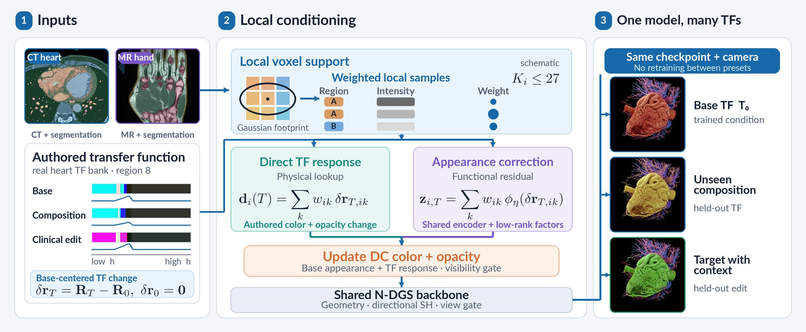
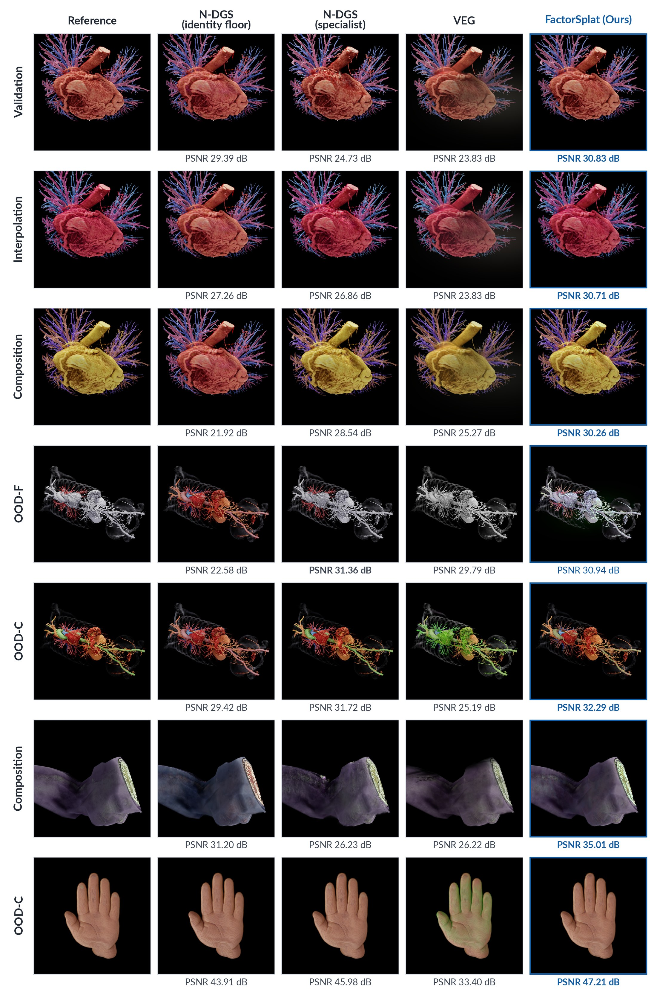
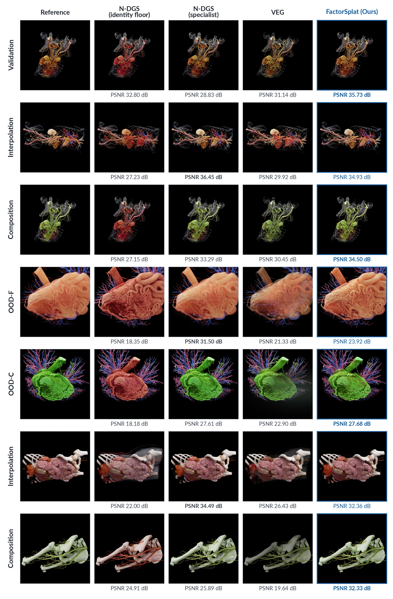

A live session in the FactorSplat viewer. Stepping through transfer-function presets on the intestine, lower-body, and heart scans reuses one trained checkpoint per scan, with no retraining between presets.
Transfer functions (TFs) control color and visibility in medical volume rendering, but image-trained Gaussian proxies typically bake one transfer function into their appearance. We present FactorSplat, a per-scene N-dimensional Gaussian splatting (N-DGS) proxy that accepts region-specific intensity-to-RGBA curves at inference.
A local lookup applies the authored color and opacity change, while a shared functional encoder and low-rank per-Gaussian factors learn the residual appearance response. Geometry and directional appearance remain shared across presets, with visibility control and TF-aware pruning preserving the ability to hide and reveal structures.
On seven CT and MR scans, FactorSplat improves mean PSNR and changed-region error over region-aware VEG across validation, interpolation, unseen composition, and out-of-distribution (OOD) edits. Across these four splits, seven-scan mean PSNR gains over VEG range from 1.10 to 1.52 dB. One checkpoint per scan supports unseen edits without retraining. At 1600², the cached fast renderer averages 524 FPS with 1.17 ms TF switches.
The TF is a function, not a preset ID, and its effect differs across the scan. FactorSplat reads each Gaussian's local region and intensity samples, then updates only its view-independent color and opacity. Geometry and the N-DGS view response stay shared across every preset.

Weighted local samples apply the authored color and opacity change directly, centred on a base TF so the base preset is reproduced exactly.
A shared pointwise encoder and rank-8 per-Gaussian factors learn how the cinematic renderer's image departs from the lookup.
An analytic visibility gate and TF-aware pruning keep primitives that any training preset needs, so hidden anatomy is still there to reveal.
Seven scans: five CT and two MR. Each has 41 TF conditions: 24 training presets, then held-out validation, interpolation, unseen composition, and five OOD edits. Means weight scans equally within each modality.
| Model | ΔTF↓ (×10−2) | PSNR↑ | FPS↑ | Train (min)↓ | |||||||
|---|---|---|---|---|---|---|---|---|---|---|---|
| val | interp | comp | OOD | val | interp | comp | OOD | ||||
| CT5 scans | N-DGS (identity floor) | 3.60 | 6.49 | 8.96 | 17.74 | 31.11 | 27.88 | 25.50 | 21.11 | 851 | 6.9 |
| N-DGS (specialist) | — | 30.70 | 30.82 | 31.09 | 31.94 | 866 | 92.8 | ||||
| VEG | 1.40 | 2.55 | 3.05 | 9.15 | 31.80 | 30.90 | 30.64 | 25.37 | 134 | 44.3 | |
| VEG (native-quantized) | 1.41 | 2.56 | 3.06 | 9.17 | 31.65 | 30.78 | 30.54 | 25.32 | 136 | 44.3 | |
| FactorSplat (Ours) | 1.36 | 2.17 | 2.88 | 8.09 | 33.08 | 32.29 | 31.33 | 26.58 | 508 | 10.5 | |
| MR2 scans | N-DGS (identity floor) | 2.88 | 4.25 | 5.48 | 11.09 | 36.58 | 35.54 | 31.17 | 27.86 | 925 | 6.0 |
| N-DGS (specialist) | — | 37.03 | 37.04 | 37.07 | 38.00 | 930 | 76.4 | ||||
| VEG | 1.19 | 1.89 | 1.59 | 5.16 | 38.82 | 38.52 | 37.82 | 31.24 | 169 | 42.6 | |
| VEG (native-quantized) | 1.19 | 1.90 | 1.59 | 5.15 | 38.67 | 38.39 | 37.70 | 31.20 | 171 | 42.6 | |
| FactorSplat (Ours) | 1.09 | 1.62 | 1.28 | 4.65 | 40.68 | 40.36 | 39.95 | 33.13 | 562 | 8.3 | |
ΔTF = changed-region edit error between predicted and reference image differences from the base TF. The identity floor has no TF input; specialists train one model per target TF, so they are preset-specific references rather than upper bounds. FPS on B200 at 1600². Bold = best per column.
Removing the physical lookup costs the most. The learned residual helps on all eight columns, the functional code matters for edits far from training presets, and the gate helps when material is removed.
| Variant (PSNR↑) | heart | vascular | robustness | |||||||
|---|---|---|---|---|---|---|---|---|---|---|
| val | int. | cmp | OOD | val | int. | cmp | OOD | rank↓ | gap (dB)↓ | |
| FactorSplat (Full) | 30.79 | 29.33 | 28.68 | 23.77 | 34.20 | 33.68 | 32.59 | 30.88 | 1.69 | 0.48 |
| − exact gate | 30.79 | 29.33 | 28.68 | 23.45 | 34.20 | 33.68 | 32.59 | 30.36 | 1.94 | 0.52 |
| − learned residual | 30.16 | 28.69 | 27.61 | 23.22 | 33.70 | 32.55 | 31.92 | 29.28 | 3.62 | 1.60 |
| − physical lookup | 29.77 | 27.48 | 26.11 | 20.30 | 33.31 | 32.13 | 29.94 | 29.18 | 4.88 | 3.47 |
| − functional code | 30.76 | 28.38 | 28.42 | 22.75 | 34.30 | 33.68 | 33.07 | 28.04 | 2.88 | 2.84 |
Rank 8. Rank and worst gap are over the eight scene–split comparisons.
Held-out cameras and TFs against the N-DGS identity floor, per-TF N-DGS specialists, and VEG. Full-frame PSNR under each image; bold marks each row's best.

CT and MR: heart (rows 1–3), vascular (4–5), nose (6), hand (7).

CT: vascular (rows 1–3), heart (4–5), intestine (6), lower body (7).